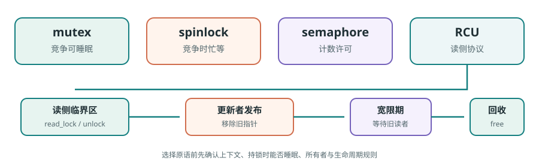

大家好，我是你们的讲师。如果你让我用一句话总结并发编程的难度——"It's all about shared state"。多个执行流共享同一份数据，就是并发Bug的万恶之源。你写一个单线程程序，每一步的执行顺序是确定的，没有问题。但一旦上了多线程，相同的输入可能每次跑出不同的结果——有时对，有时错，而且在开发和测试阶段完全看不出问题，到了生产环境才偶尔爆炸。这就是并发问题最让人头疼的特性：非确定性（Non-determinism）。
这章我们从并发问题的根源讲起，然后深入到操作系统提供（以及内核自身使用）的同步原语：自旋锁、互斥锁、信号量、RCU——每个原语都有自己的设计哲学和适用场景。最后，我们用死锁分析和lockdep来收尾，因为"不会用锁"和"用错了锁"是并发编程的两大杀手。
分享一个让我终身难忘的线上事故。有一次我们上线了一个新的缓存服务，上线后偶尔出现某个用户看到其他用户数据的诡异Bug。因为是概率性出现，开发环境完全复现不了。花了近两周时间，最终用gdb attach到进程、加打印日志层层排查，找到了罪魁祸首——一个全局的HashMap在并发读写时没有加锁，put和get同时发生时，内部的链表结构被破坏，导致get返回了错误的数据。更可怕的是，这个Bug在低并发时几乎从不出现，每次请求量超过某个阈值才开始暴露。"并发Bug就像鬼——你不知道它什么时候来，但它真的存在。"

并发问题的根源
三个关键概念，是理解并发问题的基石：
竞态条件（Race Condition）
当程序的输出结果依赖于多个执行流的相对时序时，就存在竞态条件。经典例子——两个线程同时执行 counter++。看起来是一行代码，但编译后是三条指令：load counter到寄存器、寄存器加1、store回内存。如果两个线程的load和store交错执行，结果可能只增加了1而不是2。
临界区（Critical Section）
访问共享资源的那段代码区域。临界区的设计原则是：尽量小、尽量短。在临界区里待的时间越长，其他等待的线程阻塞的时间就越久，系统的并发度就越低。
数据竞争（Data Race）
两个或以上的线程同时访问同一块内存，且至少有一个是写操作，且没有任何同步机制保护——这就是数据竞争。C++标准明确表示数据竞争是"未定义行为"（Undefined Behavior），编译器可以生成任何代码——包括你完全想不到的"优化"。
// 经典的数据竞争例子
int counter = 0;
// 线程A // 线程B
counter++; counter++;
// 预期结果: counter = 2
// 实际可能结果: counter = 1 !!!
// 因为两个线程的 load-add-store 可能交错：
// A load (counter=0) → B load (counter=0) → A add → A store (1) → B add → B store (1)概念纠错：Mars Climate Orbiter 的损失与英制/公制单位接口不一致有关，不是竞态条件案例。讨论并发缺陷时，应引用可追溯的具体缺陷报告；本章不使用无法核实的服务器故障故事。
自旋锁 vs 互斥锁
这两种锁的实现哲学完全不同，理解它们的差异对于写出高性能的并发代码至关重要。
自旋锁（spinlock）
自旋锁在竞争时会忙等，适合持锁时间短、不能睡眠的内核上下文。能否在中断上下文使用，取决于锁是否也会被中断处理程序访问，以及是否使用正确的 IRQ/BH 变体；不能把“自旋锁”理解为任何上下文都可随意使用。PREEMPT_RT 下 spinlock_t 的语义还会变化，必须区分它与 raw_spinlock_t。
// Linux 内核中的自旋锁实现（x86-64）
// 核心是 atomic 的 test-and-set 操作
static __always_inline void spin_lock(spinlock_t *lock)
{
// 使用 LOCK CMPXCHG 指令原子的尝试获取锁
// 如果锁的值从0变为1成功，则获取锁
// 否则 continuosly 尝试
asm volatile(
"1: LOCK CMPXCHG %1, %0\n\t"
" JNZ 1b\n\t"
: "+m" (lock->raw_lock),
"+r" (1)
:: "memory"
);
}Linux内核还引入了更高效的 qspinlock（队列自旋锁），它维护一个等待队列，每个自旋的CPU在不同的cache line上旋转，避免了多核同时自旋同一地址导致的cache一致性风暴。
互斥锁（mutex）
互斥锁竞争时，等待任务可以睡眠，由内核在锁释放后唤醒。是否立即发生上下文切换、唤醒后是否马上运行，取决于调度状态和竞争情况；因此不能把每次互斥锁竞争都简化成固定“两次上下文切换”。无竞争时，互斥锁也可能走很短的原子快速路径。
| 维度 | 自旋锁 | 互斥锁 |
|---|---|---|
| 等待方式 | 忙等待（spin） | 睡眠等待（schedule） |
| CPU占用 | 高（自旋时CPU全速运转） | 低（睡眠时CPU可干别的） |
| 持有时间 | 必须尽量短，且不能睡眠 | 可覆盖可能阻塞的临界区 |
| 中断上下文 | 需结合 IRQ/BH 共享关系与正确变体 | 不能在不可睡眠的中断上下文获取 |
| 竞争行为 | 忙等，占用 CPU | 可能睡眠等待，唤醒时机由调度器决定 |
| 适用场景 | 临界区极短 | 临界区较长或可能阻塞 |
选择原则：先判断当前上下文能否睡眠、临界区是否可能阻塞、锁是否跨 CPU/中断共享，再评估争用情况。不要用固定微秒阈值机械决定自旋锁或互斥锁；先采用满足上下文约束的简单方案，再用 tracing/perf 等工具测量。
信号量与PV操作
信号量（Semaphore）是计数型同步原语。教材中的 P/V 模型可理解为：P 尝试取得一个计数许可，没有许可时等待；V 归还许可并可能唤醒等待者。Linux 内核实现通过计数与等待队列管理阻塞者，不能把内部实现简单等同于“计数器变负就阻塞”。
如果你把信号量理解为"资源的数量"，就很好理解了：P操作是"申请一个资源"（资源数-1），V操作是"归还一个资源"（资源数+1）。当资源数为0时，申请者必须等待。
信号量可以解决几乎所有经典的同步问题。我们来看三个最经典的：
生产者-消费者问题
// 生产者-消费者：使用三个信号量
sem_t empty; // 缓冲区中空位数量，初始 = N
sem_t full; // 缓冲区中满位数量，初始 = 0
sem_t mutex; // 互斥访问缓冲区，初始 = 1
// 生产者
void producer() {
while (1) {
item = produce();
P(&empty); // 等空位
P(&mutex); // 锁缓冲区
buffer[in] = item;
in = (in + 1) % N;
V(&mutex); // 解锁缓冲区
V(&full); // 增加满位
}
}
// 消费者
void consumer() {
while (1) {
P(&full); // 等满位
P(&mutex); // 锁缓冲区
item = buffer[out];
out = (out + 1) % N;
V(&mutex); // 解锁缓冲区
V(&empty); // 增加空位
consume(item);
}
}哲学家就餐与读者-写者
哲学家就餐问题的核心挑战：五个哲学家（线程）围坐一桌，每两人之间有一根筷子（共享资源）。哲学家需要同时拿起左右两根筷子才能吃饭。最朴素的实现（先拿左边再拿右边）会导致死锁——所有人都拿了左筷子等右筷子。解决方案包括：限制同时就餐人数、使用奇数位拿法（左边的先拿右）、或者用管程（Monitor）封装叉子的获取。
读者-写者问题：多个读者可以同时读共享数据，但写者需要独占访问。解决方案有"读者优先"和"写者优先"两种策略——前者可能导致写者饥饿，后者读者饥饿。现实中多数系统采用"写者优先"变体，因为写者通常持有最新的数据。
经典的力量：这三个问题（生产者-消费者、哲学家就餐、读者-写者）不是学术游戏——它们就是你在实际系统中每天遇到问题的抽象化。你在写一个消息队列（生产者-消费者）、数据库事务（读者-写者）、资源分配（哲学家就餐）时，本质上就是在解决这些经典问题的变体。
RCU：读多写少的终极武器
到目前为止讨论的所有同步机制都有一个共同点：读操作也需要加锁。但在某些场景下，读操作的频率远高于写操作（比如路由表查找、文件系统inode缓存、网络连接跟踪），加锁的开销在整体性能中占比极大。RCU（Read-Copy-Update）正是为解决这种"读多写少"场景而生的。
RCU的核心思想
RCU 读者进入 rcu_read_lock() / rcu_read_unlock() 临界区，并通过 rcu_dereference() 等 API 安全读取受保护指针。更新者发布新指针或移除旧指针后，必须等到先前的读侧临界区结束，才能回收旧对象；这段等待称为宽限期（grace period）。RCU 不要求每次更新都复制整张数据结构，也不是“读者完全不需要遵守同步协议”。
// 简化的RCU模式示例
struct foo {
int key;
int data;
struct rcu_head rcu;
};
// 读者：完全无锁，极快
rcu_read_lock();
struct foo *p = rcu_dereference(g_foo);
int val = p->data; // 访问数据
rcu_read_unlock();
// 写者：创建副本，原子更新，延迟释放
struct foo *old = g_foo;
struct foo *new = kmalloc(sizeof(*new), GFP_KERNEL);
*new = *old; // 复制
new->data = new_value; // 修改
rcu_assign_pointer(g_foo, new); // 原子指针更新
// 此时新读者看到新版本，但旧读者还可能在看旧版本
// 等待所有旧读者退出RCU临界区后再释放旧版本
kfree_rcu(old, rcu); // kfree_rcu 自动等待宽限期RCU 适用于读多写少、可用指针发布/延迟回收表达的数据结构，但必须正确处理指针发布、读侧临界区、对象生命周期和内存序。它并不自动保证任意字段的一致快照，也不替代引用计数、锁或其他长期持有引用的机制。
应用边界：Linux 内核在 dcache、路由与其他读多写少的数据结构中使用不同 RCU flavor。具体 API 与可用上下文依 flavor；应先读 RCU 文档和对应数据结构的使用约定。
死锁的四个条件与lockdep
当你使用以上任何一种同步机制时，都有一个挥之不去的阴影——死锁（Deadlock）。死锁发生时，多个线程互相等待对方释放资源，所有线程都被卡住，系统完全丧失功能。
死锁的四个必要条件（Coffman条件）
| 条件 | 含义 | 示例 |
|---|---|---|
| 互斥（Mutual Exclusion） | 资源同时只能被一个线程持有 | 互斥锁的本质 |
| 持有并等待（Hold and Wait） | 线程已经持有一个资源，又在等待另一个资源 | 持有锁A，请求锁B |
| 不可抢占（No Preemption） | 线程持有的资源不能被强制剥夺 | 持有锁时不能被别人抢走 |
| 循环等待（Circular Wait） | 存在一个线程-资源的循环等待链 | T1等T2的锁，T2等T1的锁 |
破除死锁只需要破坏上述任意一个条件。实践中用得最多的是破坏"循环等待"——通过锁的有序获取（Lock Ordering），比如规定必须按A→B→C的顺序获取锁，就永远不会出现循环等待。
lockdep：内核中的死锁检测神器
Lockdep是Linux内核中一个非常巧妙的运行时锁依赖验证工具。它在内核代码每次获取和释放锁时，记录下锁的获取顺序，构建一个"锁类→锁类"的有向图。如果检测到任何循环依赖，lockdep会立即打印详细的死锁报告并触发内核警告。
# 如果你的内核开启了 CONFIG_PROVE_LOCKING=y
# lockdep 会自动运行。检测到死锁风险时你会看到类似这样的输出：
============================================
WARNING: possible circular locking dependency detected
6.8.0-40-generic #45 Not tainted
---------------------------------------------
kworker/0:1/27 is trying to acquire lock:
&sb->s_type->i_mutex_key#2 (inode->i_rwsem){++++}-{3:3}
but task is already holding lock:
&mm->mmap_lock (mmap_lock){++++}-{0:0}
which lock already depends on the new lock.
============================================
# 然后 lockdep 会打印出完整的锁依赖链，帮你定位问题lockdep 根据运行时实际观察到的锁获取依赖关系建立锁类依赖图，并在检测到可能的循环依赖时报告潜在死锁。它能发现尚未在同一次执行中完整触发的锁顺序问题，但覆盖范围仍受测试路径、锁类建模和配置影响；它不是对所有代码路径的静态形式化证明。
实践建议：开发内核代码时，可在启用 CONFIG_PROVE_LOCKING 的测试内核中运行相关路径；用户态可用 ThreadSanitizer 检测数据竞争。工具只能覆盖已执行并被检测器观察到的路径，不能保证消除某个固定比例的并发缺陷。
同步与互斥是并发编程中最难、也最有魅力的部分。从原子指令到自旋锁、从信号量到RCU、从死锁分析到lockdep自动检测——每一层抽象都在帮你降低并发编程的心智负担。但记住，没有银弹。选择合适的同步原语需要你理解场景：读多写少用RCU、临界区段用自旋锁、临界区长用互斥锁、资源计数用信号量。
下一章，我们把视角从"CPU和并发"转向"内存的奥秘"——虚拟内存。为什么每个程序都以为自己在使用整个地址空间？从虚拟地址到物理地址的翻译过程是怎样的？TLB miss和page fault的开销到底有多大？大页为什么能显著提升性能？让我们一探究竟。